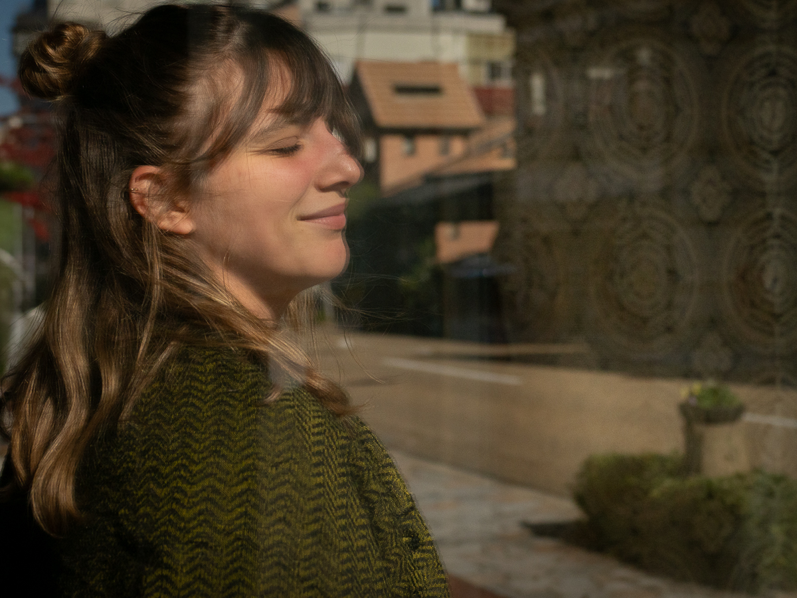

Merhaba, Ben Leyla.
Sinir sistemlerimize zarar verecek şekilde kurgulanmış bir dünyada hissettiğin kaygı, ağrı, tükenmişlik ve kopukluk, bedeninin sağlıksız bir sisteme verdiği akıllıca bir yanıt. Nefes ve somatik temelli zihin-beden iyileşmesi seansları sunuyorum; kendi iyileştirici gücünü geri alırken yanında yürüyorum.


Bu yolda, iyileşme vücudun zekasına güvenmekten ve onun doğal şifa gücünü kullanabilmesi için ihtiyaç duyduğu alanı, farkındalığı ve şefkati ona vermek ile başlar.
Benimle Çalışmanın Yolları
Kronik Ağrılardan Özgürleşme
Kronik ağrının kökenini bastırılmış duygular ve sinir sistemi üzerinden ele alan zihin-beden çalışması. Ağrının nedenini anlamayı, sinir sistemini regüle etmeyi ve ağrı döngüsünden kalıcı olarak özgürleşmeyi destekler.
Nefes ve Somatik Farkındalık
Nefes, somatik farkındalık ve sinir sistemi düzenlemesini bir araya getiren kişiye özel bire bir süreç. Bedeninle güvenli temas kurmayı, duygusal dayanıklılığı ve bedenlenmiş bir özerklik hissini güçlendirir.
Çalışmamın Temeli
Kendi iyileşme yolculuğumdan ve dünyanın bedenlerimizi nasıl etkilediğine dair anlayışımdan doğan bu temel ilkeler çalışmama rehberlik ediyor.
Sinir sistemin sağlıksız bir dünyaya tepki veriyor
Kronik ağrı, kaygı, tükenmişlik ve kopukluk, kapitalizmin son aşamasında hayatta kalmaya çalışan bedeninin akıllıca verdiği yanıtlar. Seninle ilgili yanlış veya kırık bir şey yok.
İyileşme dinlemek ve anlamaktan gelir
Kalıcı özgürlük, sinir sistemimizin mesajını dinlemek ve anlamaktan gelir. Bedenlerimizin bize anlatmaya çalıştığına kulak verdiğimizde, semptomlara duyulan ihtiyaç azalır.
Bağımlılık değil, güçlenme
Rolüm seni bana bağımlı kılmak değil; kendini iyileştirirken yanında bir destek olmak. Alan, rehberlik ve pratikler sunuyorum ki kendi iyileştiricin olabilesin. Ne kadar çok insan kendi gücünü geri alırsa, sistemlerin baskısı o kadar gevşer. Bir süre birlikte çalıştıktan sonra artık bana ihtiyacın kalmamasını umuyorum.
Bireysel iyileşme toplumsal dönüşümü mümkün kılar
Kişisel iyileşmen toplumsal özgürleşme eylemidir. Birey olarak iyileştiğimizde topluluğu güçlendiririz; topluluk iyileştiğinde acıya neden olan sistemleri dönüştürürüz. İyileşmen dünya için önemli.
Sevgi ve empatiyle köklenmiş
Bu çalışmaya tüm insanlara derin sevgi ve empatiyle yaklaşıyorum. Olduğun yerde, yargısız karşılıyorum; mükemmel olmayan bir sistemde hepimiz elimizden geleni yaptığımızı bilerek. İnsanlığın her seansında onurlandırılıyor.
Bu ilkeler sunduğum her seansı, her sohbeti ve her pratiği şekillendiriyor.

Bedenimizle her yeniden bağlandığımızda, kopukluğumuz üzerinden beslenen sistemlerin baskısı zayıflar. Bu çalışmayı, ağrıyla sınırlanmadığımızda mümkün hale gelen daha geniş özgürleşmeye katkı sunmak için paylaşıyorum.

Soruların mı var, daha fazla mı öğrenmek istiyorsun?
İletişim formundan yaz; sana dönüş yapacağım.
Buradan yaz